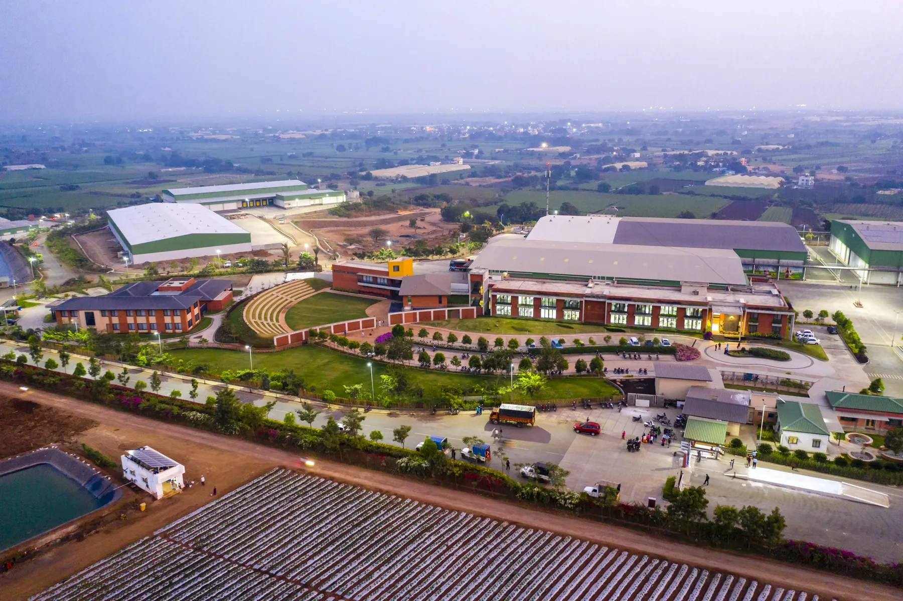
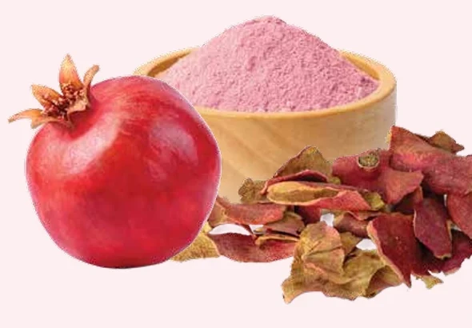
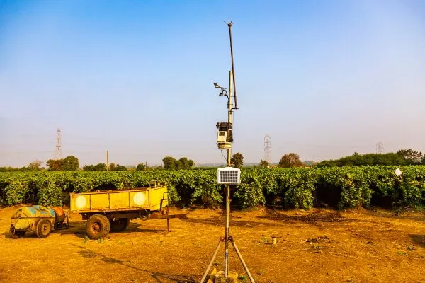
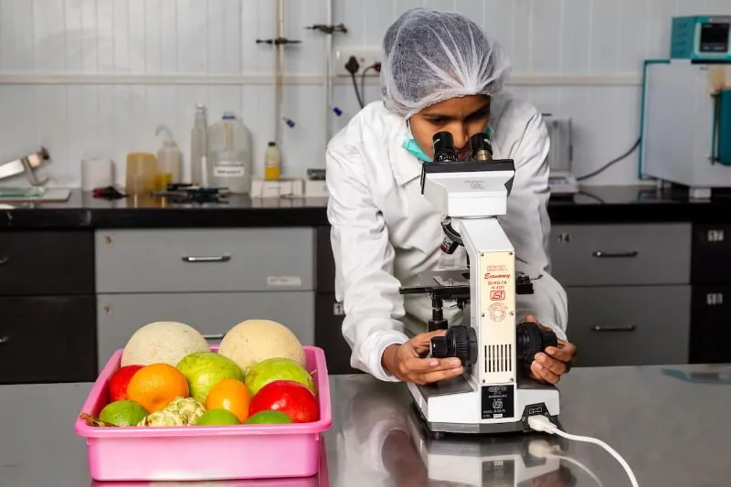

Natural functional ingredients extracted inside India’s largest integrated fruits and vegetables value chain — and returned to food, farming and animal nutrition.

Two categories, built around what you need to create.

PuniCore™ Pomegranate Peel Extract, Citrus Fibre, Citrus Pectin and Citrus peel oils for food and beverage formulations.
Explore food ingredients ↗
AlgaVita™ and AlgaRich microalgae solutions, plus PRETXI nano toxin binder for feed and aquaculture.
Explore the category ↗Fruit grown by our farmers is processed on our own campus. What the food line leaves behind becomes the raw material for extraction — and what extraction creates goes back to the farm.

30,000+ registered farmers across 45,000+ acres, with traceability from the field.
Fruit is processed on the same campus it arrives at — no gap between harvest and line.

Peel and co-products become standardised bioactives, characterised in our own labs.
[Placeholder] Standardised functional ingredients and bioactives formulated for human food, beverage and dietary applications.

[Placeholder] Targeted microalgae solutions and toxin binding additives supporting aquaculture, poultry and livestock health.
Microalgae cultivation and biostimulants close the loop — Farm to Bottle, Bottle to Farm.
Our microalgae are cultivated in an open-pond system. As they grow they absorb carbon dioxide and release oxygen — so cultivation is not simply less harmful to the environment, it is actively capturing carbon.
The biomass then returns to farming as a biostimulant and to aquaculture and animal feed as nutrition.
See our microalgae solutions ↗Samples, specifications and bulk enquiries — our BioActives team will get back to you.

.svg)